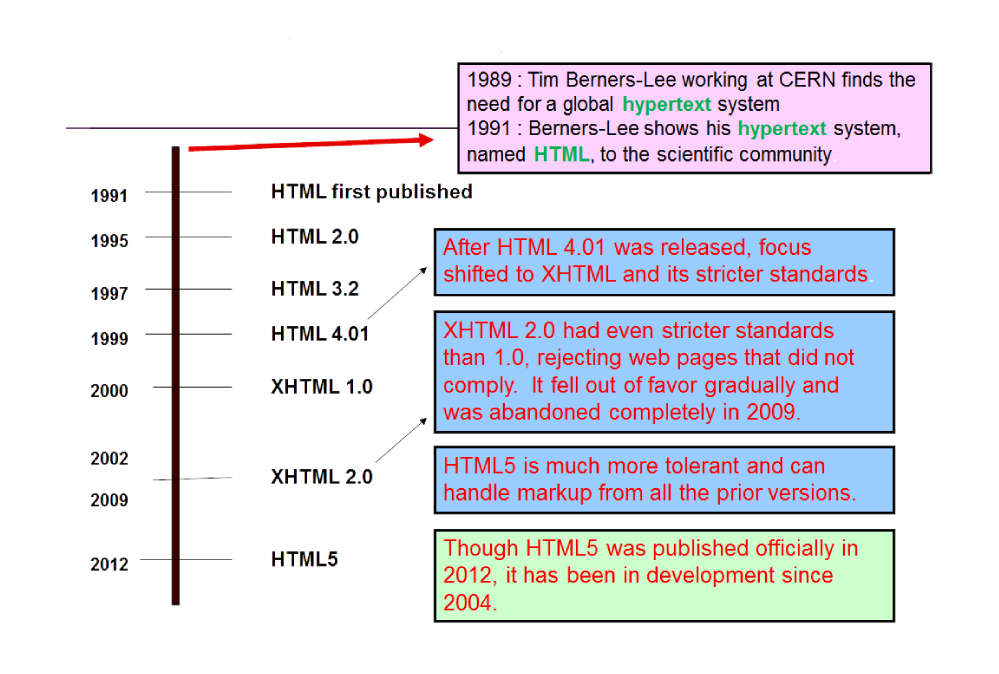

HTML’s Role in Web Expansion
How HTML Grew with the Web
The Growth of HTML
HTML's simplicity and robustness catalyzed the rapid adoption of the web. Its evolution, from basic document structuring in early versions to supporting style sheets, scripts, and multimedia by HTML 4.01, expanded web applications significantly, enhancing user interaction and setting the stage for modern web development.

HTML has evolved significantly, leading to modern web technologies.